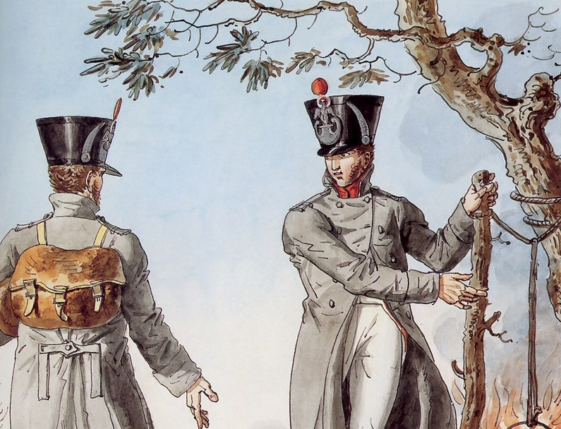
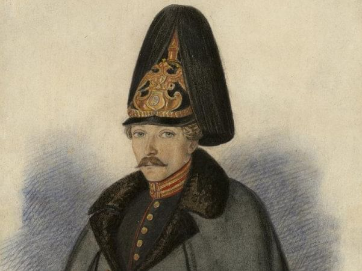
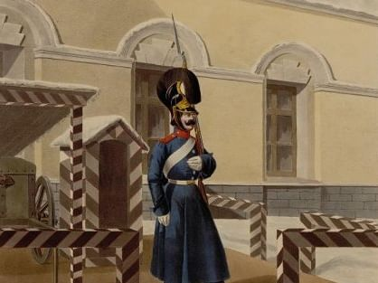
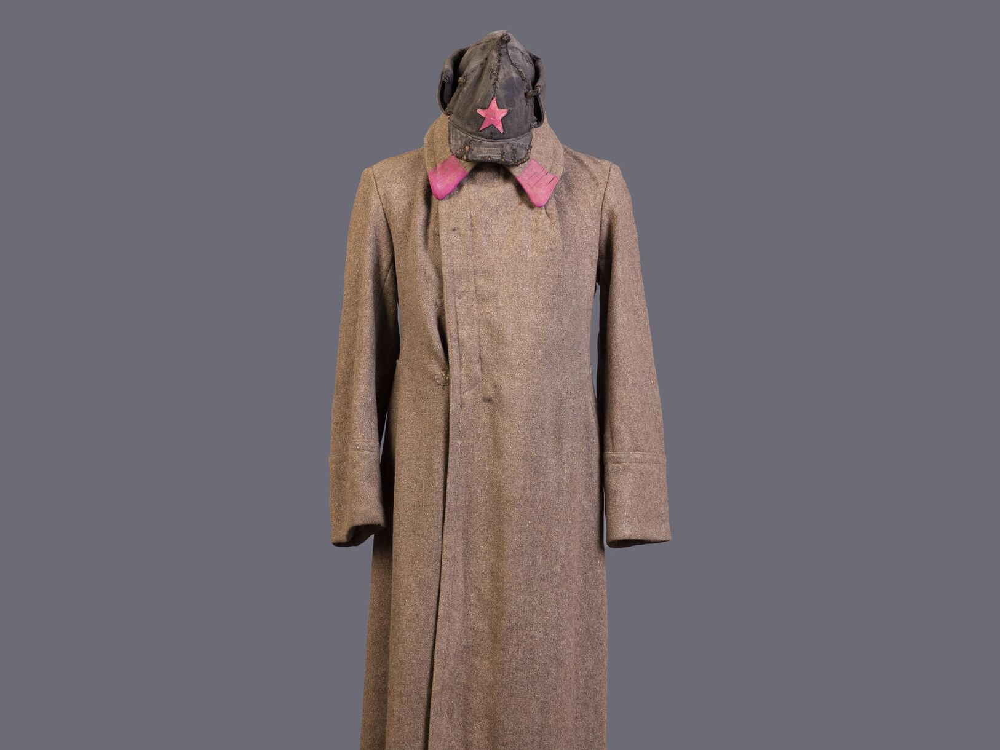
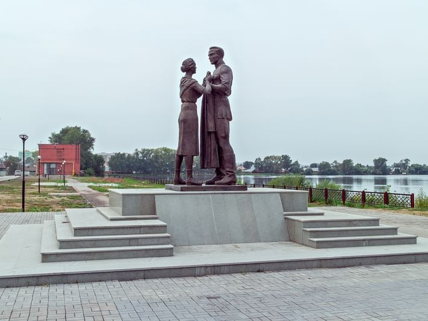

Шинель французской армии.
В начале XIX века шинели стали форменной одеждой для ведения боевых действий зимой не только в русской армии, но и в других европейских армиях, в том числе и французской.
Французская шинель образца 1812 года, как и шинель русских солдат, изготавливалась из фабричного сукна, но дифференцирующим признаком, необходимым для различения «своих» и «чужих» во время сражения, был цвет одежды.
В отличие от русских солдат французы носили шинели разных цветов: синие, коричневые, серые.

Практичная шинель из серого сукна.
В конце ХVIII века выбор материалов для армейской одежды был невелик. Льняная ткань не грела в плохую погоду, грубая конопляная пенька годилась лишь на канаты и паруса, производство хлопка едва встало на поток. Сукном же Россия была обеспечена — благодаря Петру Первому. По царскому указу в Москве и Казани были открыты суконные мануфактуры, которые и работали на армию. Шили шинели из некрашеного сукна в целях экономии

Шинель для штатских.
В зимнюю стужу в России шинель согревала не только военнослужащих. Начиная с ХIХ века в суконную униформу облачилась значительная часть мужского населения страны — от гимназистов и студентов до пожарных и чиновников государственной службы. Шинели заиграли разными оттенками. Гимназисты, к примеру, носили двубортные шинели светло-серого цвета, украшенные двумя рядами серебряных пуговиц, а униформа чиновников министерства просвещения и в Академии художеств была темно-синего цвета. Шинели шили из дорогого сукна на меховой подкладке или драпа — по уровню достатка.

Советская шинель с «разговорами» и «богатыркой».
История красноармейской формы началась через год после революции, когда Народный комиссариат объявил конкурс на новую военную форму. Солдаты революции должны были иметь героический облик. В конкурсе участвовали живописцы Виктор Васнецов и Борис Кустодиев. Они сделали эскизы суконных шлемов-буденовок по принципу «богатырок» — старинных головных уборов. Шинели в стиле стрелецких кафтанов украсили красными поперечными нашивками-«разговорами». Впрочем, декоративные элементы вскоре отменили — по причине демаскировки.

Шинель из арамильского сукна.
Практически все памятники советским солдатам «одеты» в бронзовые шинели. В 2013 году в городе Арамили Свердловской области открыли памятник самой шинели — единственный в мире. В бронзе воплотили сцену прощания: девушка провожает парня на фронт и передает ему шинель. Памятник посвящен и героям войны, и труженикам тыла — работникам местной суконной фабрики. В годы войны каждый четвертый советский солдат воевал в шинели, сшитой из арамильского сукна.